| 시나리오 편집창 | 시작 다음 이전 |
시나리오를 생성하거나 열면 편집 윈도우에 시나리오의 아이템들이 출력되는데 여기에 각 기능의 아이템을 추가/삭제/수정 할 수 있습니다.
배경색
·편집하는 시나리오의 타입에 따라서 편집 창의 배경색이 달라지게 됩니다.
서비스 시나리오 파일(SSFX)
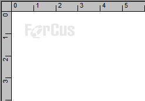
메뉴 시나리오 파일(MSFX)
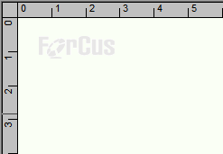
화면 표시
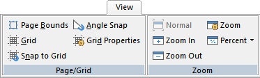
· 편집 화면에 그리드를 표시하여 아이템을 정렬할 수 있습니다.(리본 메뉴 View > Page / Grid 에서 Grid 메뉴)
· 아이템 이동 시 표시된 그리드에 맞춰서 이동 할 수 있습니다.(리본 메뉴 View > Page / Grid 에서 Snap to Grid 메뉴)
· 화면에 편집창의 Page를 표시할 수 있습니다. 인쇄 시 Page단위로 인쇄 됩니다.(리본 메뉴 View > Page / Grid 에서 Page Bounds 메뉴)
· 그리드의 속성을 설정 할 수 있습니다.(리본 메뉴 View > Page / Grid 에서 Grid Properties 메뉴)
· 화면을 확대/축소 할 수 있습니다.(리본 메뉴 Home > Zoom 이나 View > Zoom 또는 Shift 키를 누르고 마우스 스크롤을 움직여도 가능)
창 이동
· 편집창의 오른쪽과 아래쪽에 스크롤바가 있는데 이것을 움직이면 화면을 상하 좌우로 움직일 수 있습니다.
· 마우스 휠을 위 아래로 움직이면 화면을 상하로 움직일 수 있으며 Ctrl 키를 누르고 마우스 휠을 위 아래로 움직으면 화면을 좌우로 움직을 수 있습니다.
· 리본 메뉴 Home > Casvas 나 Edit > Canvas 에서 Pan 메뉴를 선택하면 화면을 잡아서 이동 할 수 있습니다.( 마우스 커서 )
· QuickMap 을 이용하면 보다 쉽게 화면을 이동 할 수 있습니다.
아이템 선택 및 이동
· 편집 창에서 선택 하고 자 하는 아이템을 클릭하거나 여러개의 아이템을 선택하고 자 할 때는 마우스를 드래그 하여 선택합니다. 아이템을 선택할 때는 리본 메뉴의 Home > Canvas의 Select 메뉴가 눌려져 있어야 합니다.
· 편집 화면을 잡아 움직이는 Pan 상태(마우스 커서 ) 또는 링크 상태(마우스 커서 +) 에서 마우스 오른 버튼을 누르면 Select 상태로 돌아 갑니다.
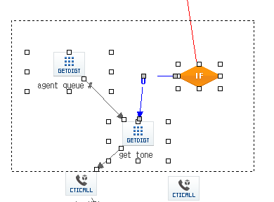
· 편집 창에서 여러개의 아이템을 마우스로 드래그 하여 선택 후 이동 합니다. 키보드 방향 키도 이동 가능 합니다.
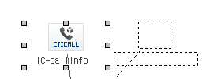
· 편집 창에서 아이템을 마우스로 선택하여 이동 합니다. 키보드 방향 키도 이동 가능 합니다.
아이템 표시 및 팝업 메뉴
· 아이템은 북마크, 중단점 설정에 따라 아이템 이미지가 다르게 표시 됩니다.
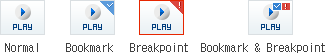
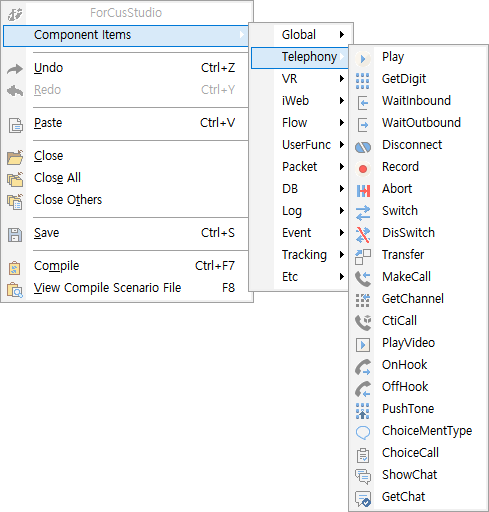
Component Items : 아이템 생성, 아이템을 선택하면 마우스 커서( )가 바뀌는데 편집 화면에 클릭하면 아이템이 생성 Undo : 실행 취소 Redo : 다시 실행 Paste : 붙여 넣기 Close : 현재 편집 중인 시나리오 닫기 Close All : 열려 있는 시나리오 모두 닫기 Close Others : 현재 편집 중인 시나리오 제외하고 모두 닫기 Save : 현재 편집 중인 시나리오 저장 Compile : 현재 편집 중인 시나리오 컴파일 View Compile Scenario File : 현재 편집 중인 시나리오의 컴파일 한 파일 보기(기본 Notepad)
· Item Popup Menu
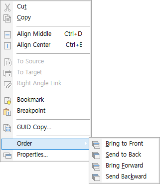 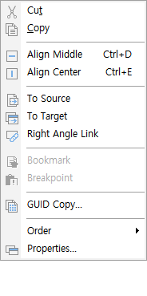 [Symbol Item] [Link Item]
Cut : 잘라내기 Copy : 복사하기 Align Middle : 아이템 가로 가운데 정렬 Align Center : 아이템 세로 가운데 정렬 To Source : Link Item시 Enable되며 링크의 소스 아이템으로 이동 To Target : Link Item 시 Enable되며 링크의 타겟 아이템으로 이동 Right Angle Link : Link Item 시 링크가 직각이 아닐 경우 직각 링크로 만든다 Bookmark : Symbol Item 시 Enable되며 아이템을 북마크로 설정 / 해제 Breakpoint : Symbol Item 시 Enable되며 디버그 중단점 설정 / 해제 GUID Copy... : 보이지는 않지만 각 컴포넌트 아이템이 가지고 있는 고유의 GUID 키 값을 복사(GUID 검색 시 사용 가능) Order : Symbol Item 또는 Link Item의 편집 화면상의 순서를 설정 Properties... : 아이템 속성창 팝업
시나리오 이름 탭
· 정상 시나리오 이름
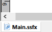
· 시나리오 수정 상태 시나리오 이름
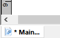
· 프로젝트 이름 과 시나리오 이름 표시 팝업(멀티 프로젝트에서 같은 시나리오 이름 구분)
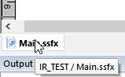
아이템 링크 순서
· Var Item은 모든 시나리오에서 Start Item 다음에만 링크 될 수 있습니다. · Main.SSFX에서는 Start Item 다음 Item으로 WaitInbound, WaitOutbound Item만 링크 할 수 있고, Var Item은 WaitInbound, WaitOutbound Item 다음에만 링크 될 수 있습니다.
|
| Copyrights(C) Bridgetec.co.kr. All Rights Reserved | 시작 다음 이전 |